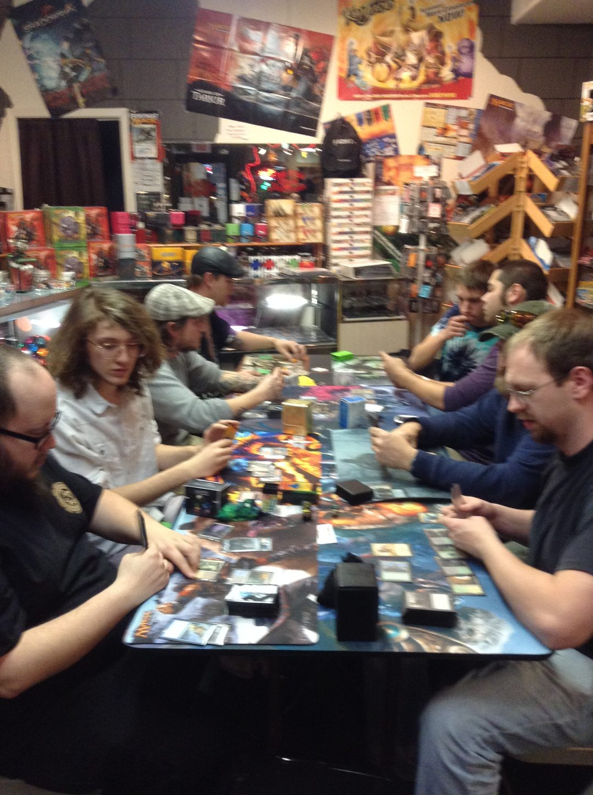
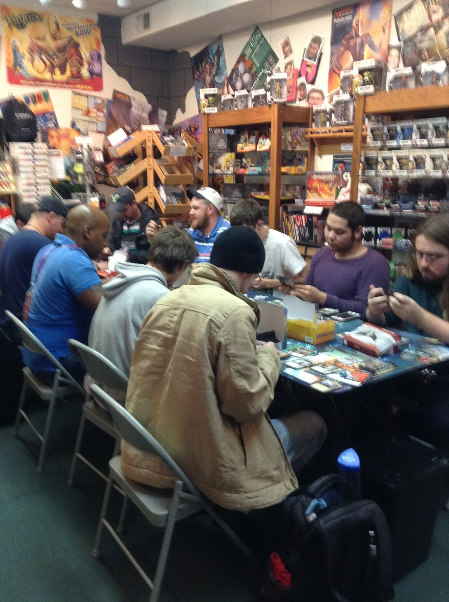
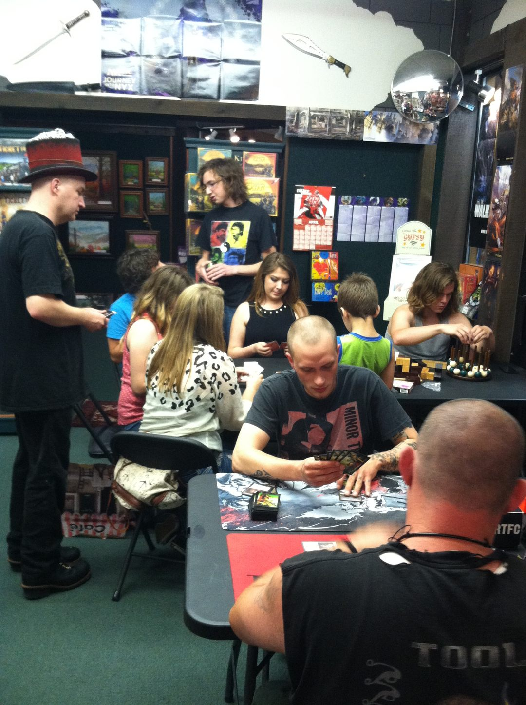
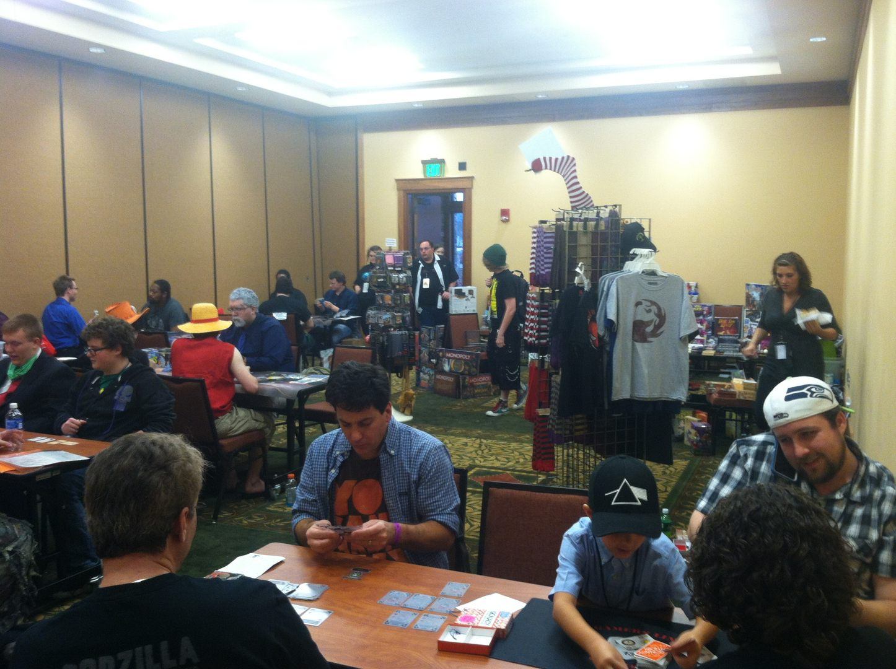
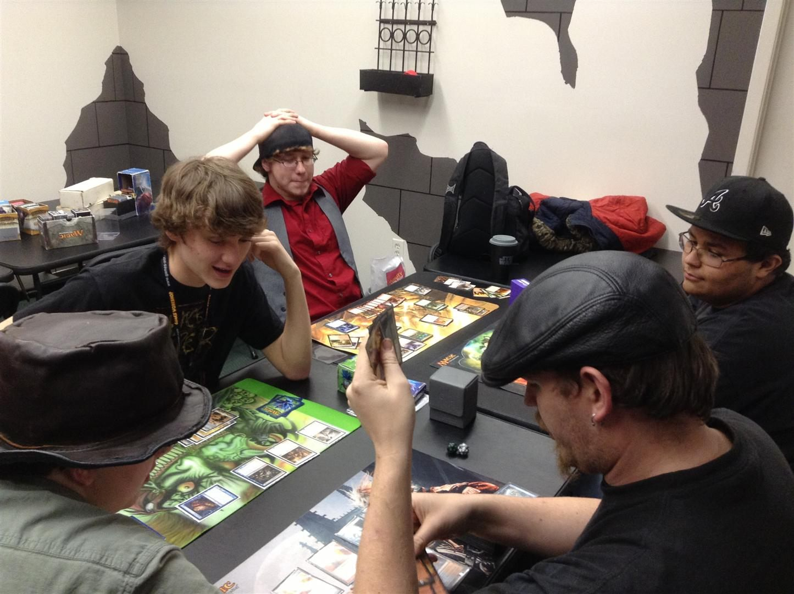
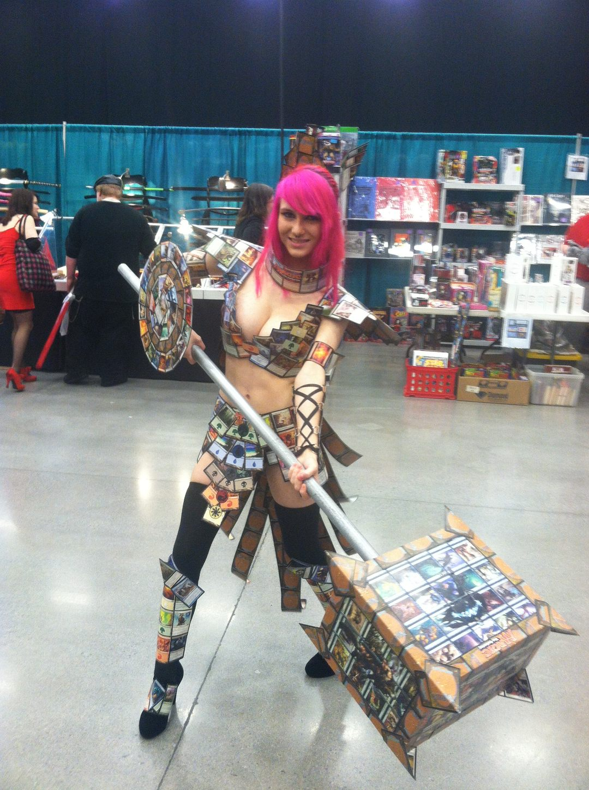
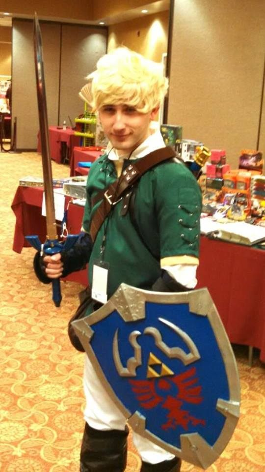
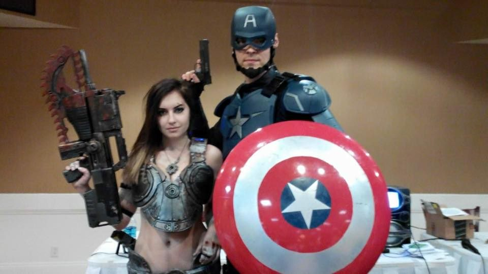
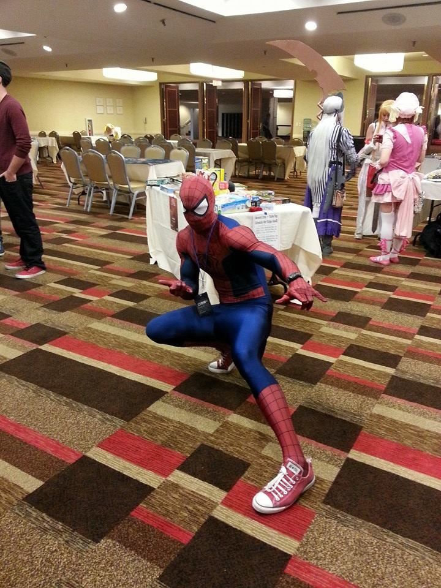
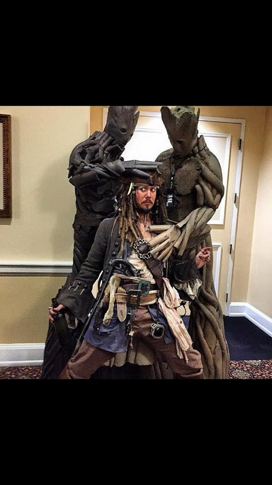

Gamers Link
Gamers Link is a family owned and family operated gaming business, opened in 2013 by Shelley Holk and me, her oldest son Cassidy. Gaming has always been a big part of our lives as a family! It brought us closer together, nurtured our family relationship growing up, and still does to this day. Now, more than a decade later, my younger brother and I game together all the time!
To our family, gaming is about face-to-face interaction, communication and spending time with those you love. That is our goal for Gamers Link: to bring people together, to “Link” “Gamers” to each other every day!
👩 Momma’s childhood
Momma grew up in Chicago in the 70s with a blind mother, so life wasn’t easy for her family, but gaming was always there. She spent a lot of time in the hospital as a young girl. While other kids watched cartoons, she found comfort and joy in TV game shows like “Pyramid”, “Match Game” and “Hollywood Squares”, playing along with the people on TV.
She played all sorts of classic board games: “Payday”, “Aggravation”, “Sorry”, “Skip-Bo”, “Phase 10”, “Risk”, “Clue”, “Balderdash”, “Chess”, “Pig Mania”, “Go For Broke” and more. She fondly remembers playing with my grandpa “Ted” and her blind mother “Ma”, which brought them all very close. One story I remember: she used to play poker with strangers on the trains in downtown Chicago as a kid, making friends with people on their way to work and brightening their commute!
Gaming goes back in our family for generations, and so does the love of linking people together through games.
👦 The sons of Gamers Link
My name is Cassidy. I was an only child until I was about 12, so Momma is who I played games with almost exclusively. She worked two or three jobs and didn’t have much time to spare, but she made time! Hard-working, loving, attentive, and not afraid to obliterate me in a game of “Clue”. She taught me how to win and, more importantly, how to lose. I have great memories of late-night “Risk” after her double shifts serving tables. She would never give up Australia, and she still fights for it to this day!
Growing up I loved Pokémon: the shows, the video games, all of it. (Sadly, I never did catch them all!) Then I discovered Magic: The Gathering and I was hooked. Nineteen years later, I still am.
Quincey, growing up at Gamers Link 🎂
My younger brother Quincey was only 4 when we opened the shop, so gaming is all he knows. He played in Magic tournaments at 4 years old: he couldn’t read yet, so he memorized the artwork and what the cards did! Now he’s one of the best Magic players I know, a great chess player , and my best friend. The shop wouldn’t be the same without him.
Game nights, tournaments & cons
Years of games, friends and a whole lot of fun. Tap a photo to see it bigger.










Thank you for being part of our story 💙
Gaming isn’t just a paycheck or a business for us, it’s our way of life. It’s more than cards, dice or a game board: it’s making friends, meeting people and spending time with those you love. Shelley, Quincey and I (Cassidy) can’t wait to see you in the shop!